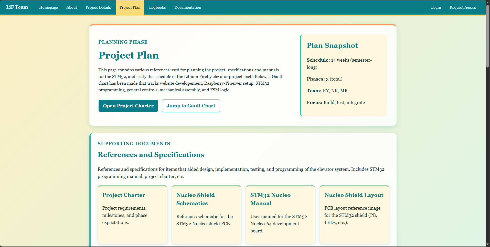
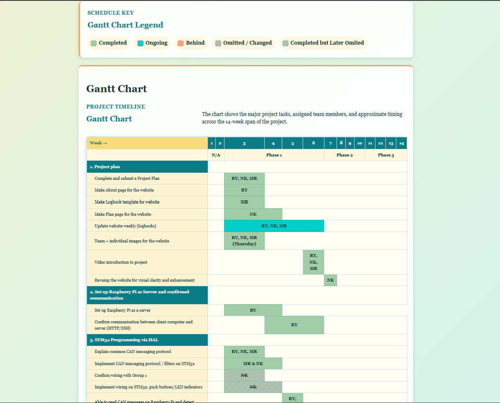
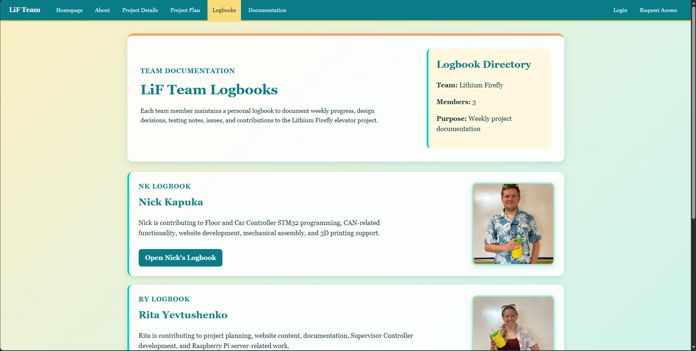
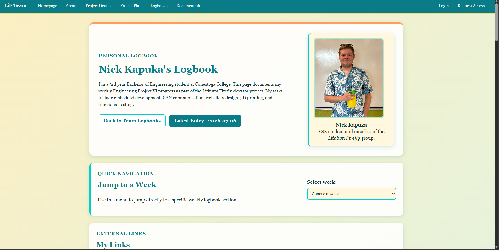
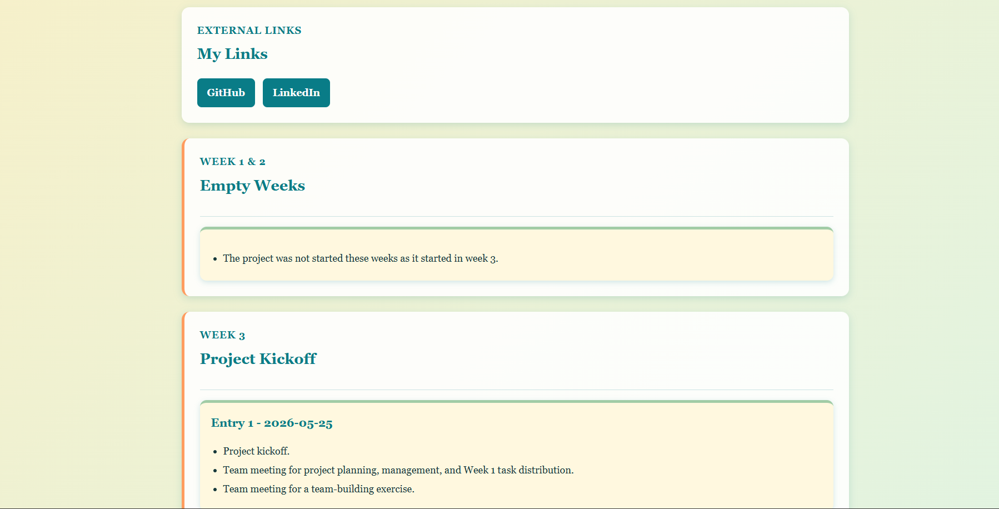
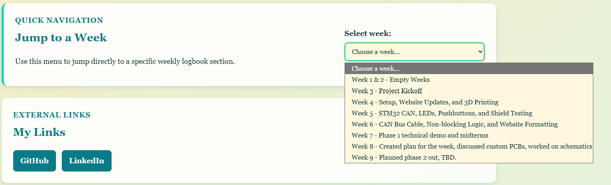
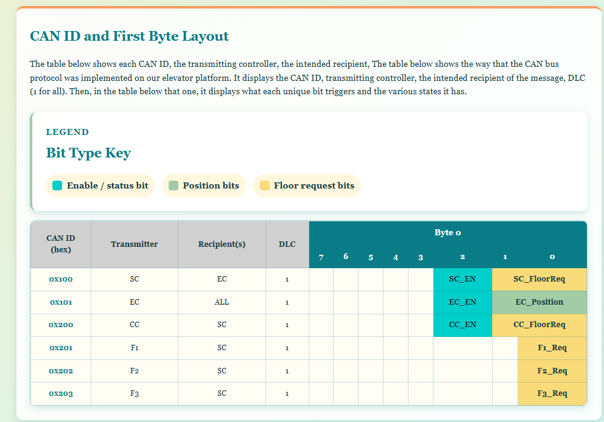
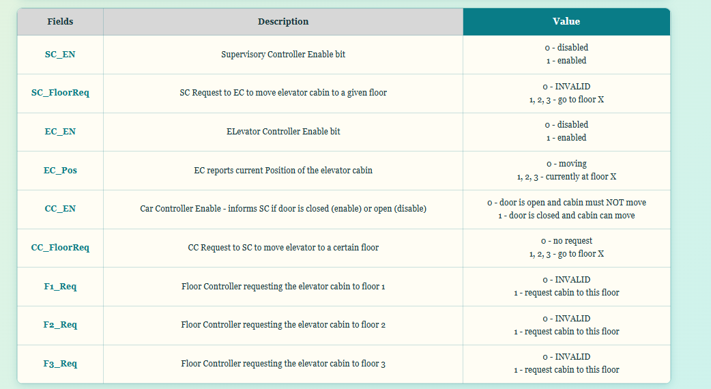

Continued revamping website pages, rebuilt the
logbook/documentation/CAN pages, added personal logbook navigation
JavaScript, and split the CSS into dedicated files.
This day, I continued revamping the webpages and powered through most
of the remaining major pages. A few notable updated pages are shown
below.

Updated Project Plan page showing the main project resource
cards

Updated Project Plan page showing the redesigned Gantt chart
This is the revised Project Plan page. It includes four
articles/subheadings that link to the main resources used throughout
the project. The second image shows the Gantt chart following the new
design.
Redid the main logbook page
The main Logbook page was also redone. It now includes links to each
team member's logbook page, along with a brief summary of what each
person is doing.

Updated main Logbook page with links to each team member's
logbook
Updated personal logbook pages and jump navigation
The personal logbook pages were redone with the new colour palette and
a cleaner organization system. Weeks are separated using sections, and
individual entries are organized using articles.

Updated personal logbook page using the new theme and layout

Personal logbook page showing week-based organization
Another feature that was added was the "jump to page" feature, which
allows for easier navigation between weekly sections on the personal
logbook page.

Jump-to-entry dropdown used for faster personal logbook
navigation
Below is the relevant JavaScript code used to make it work:
// ok first personal JS file lessss gooooo
// also mb, I will overcomment because writing code past 3am makes me forget it. I genuinely need to explain every line or I will have a stroke later trying to understand wtf I did
// so we gotta run it AFTER the HTML has loaded cause JS LOVES to run first
document.addEventListener("DOMContentLoaded", function () {
// these are CUSTOM functions!
setupLatestEntryButton();
setupWeekJumpMenu();
})
// let's make the first function setupLatestEntryButton() that will find the newest logbook entry and update the "latest entry" button in our chud logbooks
function setupLatestEntryButton() {
// find the button with id="latest-entry-link"
const latestButton = document.getElementById("latest-entry-link");
// find all logbook entry links using the class in <article class="entry-summary">
const entryLinks = document.querySelectorAll(".entry-summary h3 a");
// return if no data/empty
if (!latestButton || entryLinks.length === 0) {
return;
}
// define these as empty to start
let latestEntry = null;
let latestDate = "";
// loop through every entry link found on the page
entryLinks.forEach(function (link) {
// checks both the visible link text and the file path
// basically, let's you use:
// <a href="./entries_NK/NK_entry_2026-06-18.html">Entry 3 - 2026-06-18</a> or
// <a href="./entries_NK/NK_entry_2026-06-18.html">Entry 3</a> -- if you're a lazy bum
const date = findDate(link.textContent + " " + link.href);
// if this date is newer than the newest found so far, save it
if (date > latestDate) {
latestDate = date;
latestEntry = link;
}
});
// when a latest entry is find, update the button for latest entry!
if (latestEntry) {
latestButton.href = latestEntry.href;
latestButton.textContent = "Latest Entry - " + latestDate;
}
}
// builds a drop down menu dynamically using the week sections already on the page
function setupWeekJumpMenu() {
// grab the ID of "week-jump"
const weekMenu = document.getElementById("week-jump");
// find all the stuff with id of week-entry box (used in the HTML via <section class="week-entry-box" id="week-3">
const weekSections = document.querySelectorAll(".week-entry-box");
// return of no data/empty
if (!weekMenu || weekSections.length === 0) {
return;
}
// since selectorAll grabbed many entries, forEach is basically a for loop that searches through each
// basically, for each week's box, find that week box's h2. Hard to explain but:
/*
<section class="week-entry-box" id="week-5">
<div class="week-header">
<p class="section-label">Week 5</p>
<h2>STM32 CAN, LEDs, Pushbuttons, and Shield Testing</h2>
</div>
we first search in this section and find it's h2:
<h2>STM32 CAN, LEDs, Pushbuttons, and Shield Testing</h2>
then the const label thing gets:
<p class="section-label">Week 5</p>
then, with the power of friendship it becomes a dropdown text in the label && heading in if:
Week 5 - STM32 CAN, LEDs, Pushbuttons, and Shield Testing
*/
weekSections.forEach(function (section) {
// this searches the webpage for the first h2
const heading = section.querySelector("h2");
// this searches only inside that SECTION for the first h2
const label = section.querySelector(".section-label");
// if the section has no id, skip it, and the dropdown needs an ID so return if nothing's there
if (!section.id) {
return;
}
// set the dropdown value to section id
// section.id = "week-5" so option.value would be "#week-5" - just formatting
const option = document.createElement("option");
option.value = "#" + section.id;
// this builds text for the dropdown menu
if (label && heading) {
option.textContent = label.textContent + " - " + heading.textContent;
} else if (heading) {
option.textContent = heading.textContent;
} else {
option.textContent = section.id;
}
// add the new option into the dropdown menu
weekMenu.appendChild(option);
});
// when the user changes the dropdown, jump to the selected week
weekMenu.addEventListener("change", function () {
if (weekMenu.value !== "") {
window.location.href = weekMenu.value;
}
});
}
// look for dates written like the usual format of 2026-06-20
function findDate(text) {
// search the text for a date pattern: 4 digits, dash, 2 digits, dash, 2 digits
const match = text.match(/\d{4}-\d{2}-\d{2}/);
// if found, return this date
if (match) {
return match[0];
}
// if not, fmcl and return empty
return "";
}
Updated the Documentation and CAN protocol pages
After the logbook pages, I returned to the other major pages. The
Documentation page now displays some of the documentation being done
outside the general scope of the main website pages. This includes our
modified CAN protocol compared to the class version, the Raspberry Pi
deployment workflow (WIP; MR), and the caffeine study, which is a
semester-long study of how many energy drinks we can consume (WIP;
NK).
Below is the updated CAN protocol page, which features two tables and
their explanations.

Updated CAN protocol page showing the first CAN table and
explanation

Updated CAN protocol page showing the second CAN table and
explanation
Split the CSS into dedicated files
Lastly, the CSS was split into various files to keep the webpages more
organized with dedicated CSS includes. The near-thousand-line
tropical.css file still exists for
reference, but each page now has more focused styling files.
The includes go inside the
<head> of each file like
this: